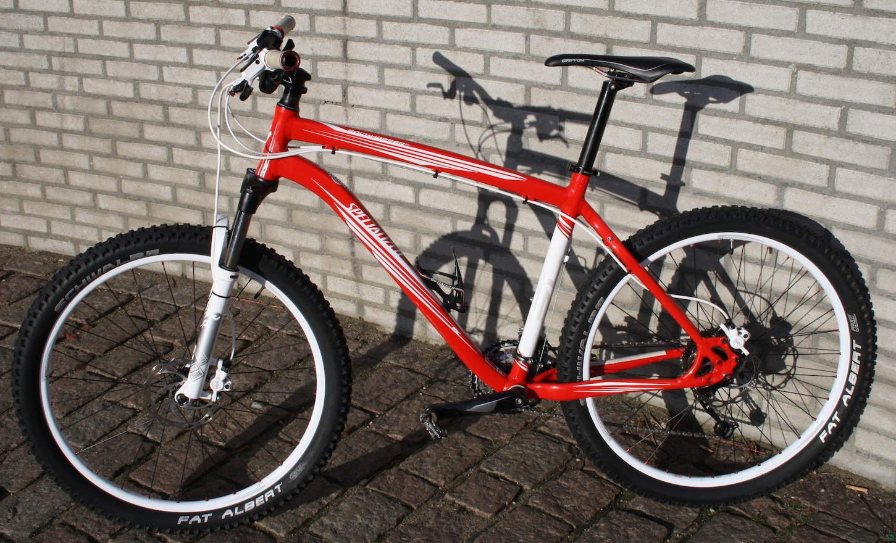

Riding a bike is a great option!

Apart from getting a great exercise, riding a bike(or a skateboard/scooter/rollerbaldes) is one of the few ways of transportation that uses energy and pollutes the air.
Continue
Back
Home